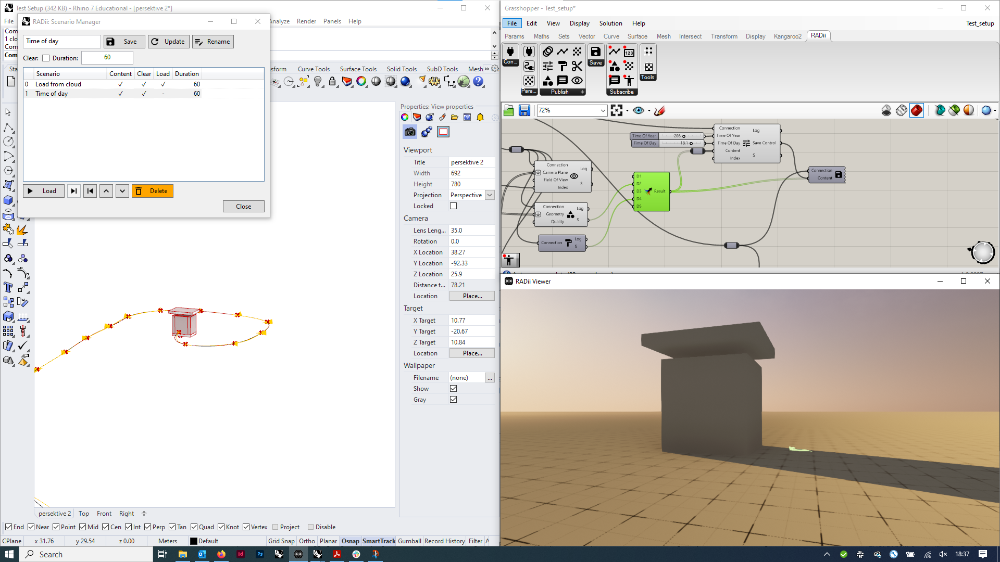
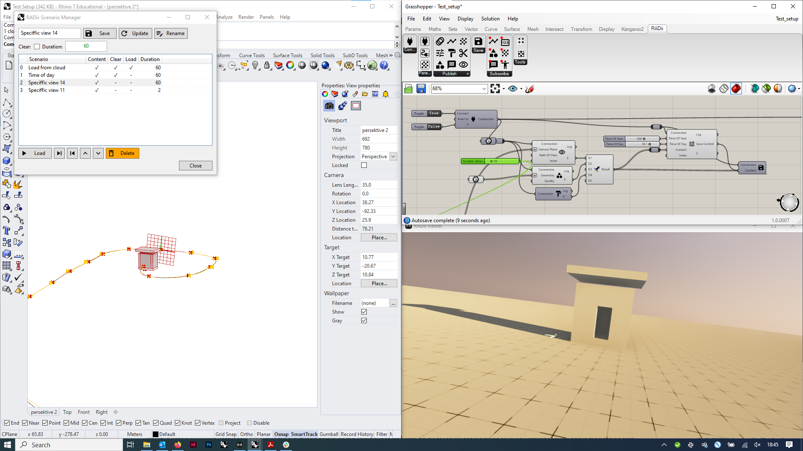
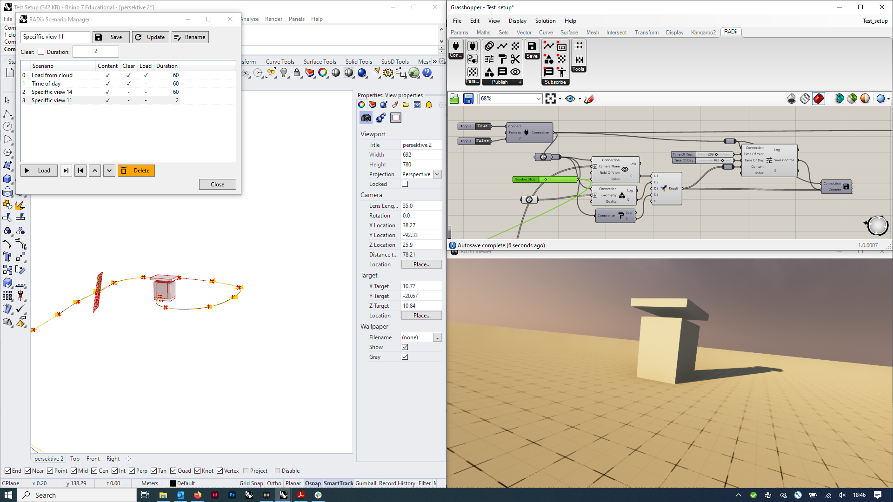

5. PublishControl¶

- Publish control lets you control the viewer settings from grashopper
Everything you set as input can be saved in this publish control component with the scenario manager. Be careful with geometry content, this can make your grasshopper file very heavy.
Note: Grasshopper has an autosave. If the Publish Control component becomes too heavy, it will make you wait a lot
Input
Name |
Description |
Type |
|---|---|---|
Connection |
Link with the Connect component |
Connect |
Time of Year |
Day of the Year |
Number |
Time of Day |
Time of the day |
Number |
Content Save |
output from other radii components |
save (Radii) |
Index |
For switching between scenarios |
Number |
Output
Name |
Description |
Type |
|---|---|---|
Log |
Documents changes & Data send |
Text |
Save Control |
Saving the controls only |
Radii |
Save Scenario |
Save control and geometry |
Radii |
Menu
Name |
Description |
|---|---|
Scale |
Set the model scale |
Weather |
Weather options |
Grid |
Toggle base floor |
Origin |
Toggle origin sign |
Labels |
Toggle all labels |
Fly |
Forces viewers to fly |
Set position |
Set the camera of your active rhino viewport as position |
Save position |
Include the position in a scenario save |
Clear |
Clears all content from viewers |
Set Location |
Sets the world location for the sun |
Origin rotation |
Rotates the model by x-degrees |
Set origin rotation |
Confirm rotation |
File |
Displays the files from the channel that you can input below |
Get files |
Connects to the channel, now the saved files appear in files |
Scenario Manager |
Opens the scenario manager, you can save your scenario with all settings from above |
with files you can command the scenario manager to directly download a file from the server instead of uploading it and sending it to the viewers
5.1. Scenario Manager¶

The scenario manager lets you save the selected options of the publishControl component and content that is connected to it.
Clear |
clears the scene between each scenario - this can mean that you are uploading your geometry every time your load a new one |
Duration |
length of the scenario |
Column descriptions
Blank |
Number of the scenario |
Scenario |
name of the scenario |
Content |
is content send (geometry, views, etc.) you could just send settings (time, position etc.) |
Clear |
Clears the channel before uploading new geometry |
Load |
loading from the channel |
Duration |
of the scenario |
The saved content is stored in the component, be aware that huge amounts of geometry can make your .gh file very heavy and slow.
The current best practice for heavy geometry is to upload it to the server via the cloud manager in the save component and then command the
download via the publishControl –> File settings
Examples
You have some geometry (a building) and want to publish or download from the server (1), then walk through it, change the time of the day (2) and continue your tour via a series of pre defined views (3-4). Instead of setting everything live during your presentation, you define one position after the other and save them as individual scenarios. You then can switch through them during your presentation more easily.
1)

2)
3-4)
 